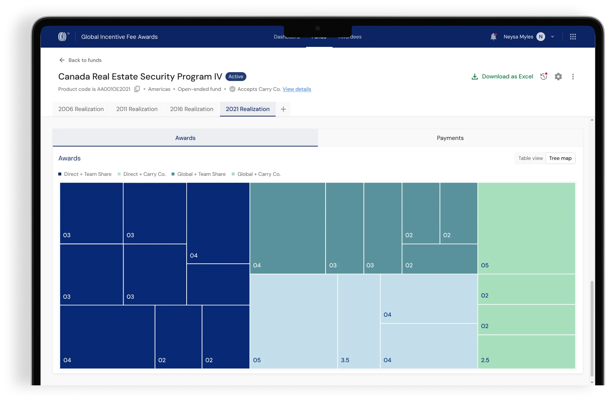
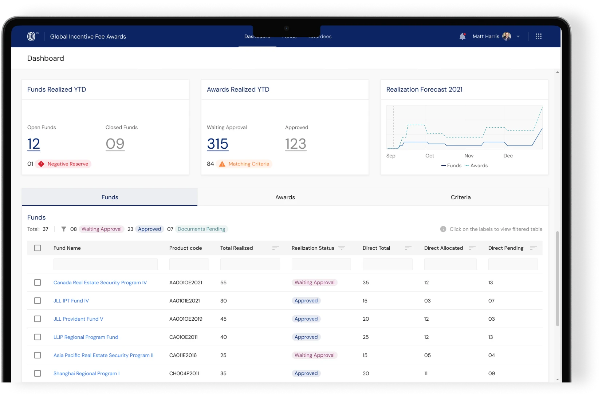
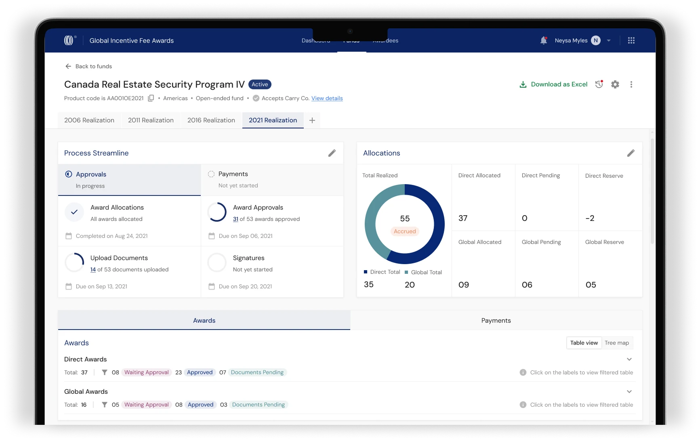

Data discrepancies
Stakeholders kept separate versions of information, creating inconsistencies that needed time-consuming reconciliation.



By improving stakeholder visibility and coordination across a complex, multi‑stakeholder process (GIFAGlobal Incentive Fee Awards), helping prevent the delays that result in tax liability.
Stakeholders around the world managed a complex business process (GIFA), working on overlapping tasks with limited visibility into each other’s decisions and progress.
Stakeholders kept separate versions of information, creating inconsistencies that needed time-consuming reconciliation.
Stakeholders lacked clear updates on task progress and changes made by others, making it harder to coordinate work and spot delays.
We received an initial brief that outlined proposed solutions before the underlying user problems were fully understood.
To uncover the real challenges, we questioned the existing process, the stakeholders involved, their responsibilities and the difficulties they faced.
The stakeholders involved were occupied with other critical organisational matters, making it difficult to schedule time with them.
After understanding the workflows, stakeholder responsibilities and known pain points with the product manager, we pushed to secure limited user access and used focused conversations to identify the root causes of the issues.
EditorsPersona responsible for opening, closing and moderating the realisation (GIFA). only discovered errors and roadblocks when they returned to work on the process.
Every step of a fund’s process in one view, with alerts the moment something needs attention.
Stakeholders couldn’t see each other’s overlapping actions, leading to data discrepancies and time-consuming reconciliation.
Records every data change and the decision behind it, so everyone is on the same page.
ApproversPersona responsible for reviewing and giving final approval on all realisation (GIFA) decisions. manually reviewed hundreds of awards to identify those matching their criteria.
Predefined criteria automatically flag the awards that match.
One shared workspace replaced a fragmented, spreadsheet‑driven process, and the results showed up in the following award cycle.
Awards were approved before the taxable deadlines, so delays no longer turned into tax liability.
Faster from award allocation to final approval, with issues caught and cleared early.
Every stakeholder works from the same up-to-date information, with no separate versions to reconcile.